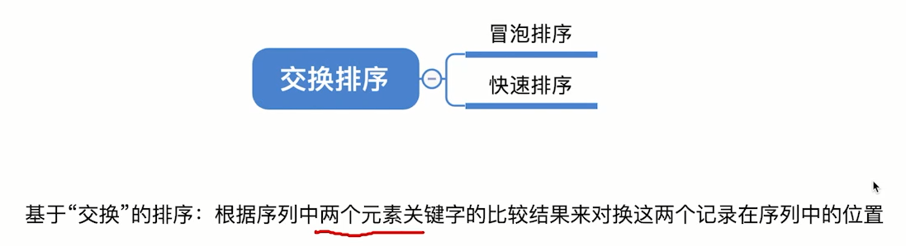
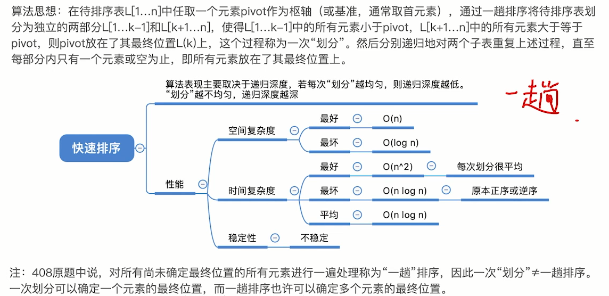

快速排序——Quick Sort


快速排序的基本思想：通过一趟排序将待排记录分隔成独立的两部分，其中一部分记录的关键字均比另一部分的关键字小，则可分别对这两部分记录继续进行排序，以达到整个序列有序。
确定中间数的位置
一、算法思想：
快速排序使用分治法来把一个串（list）分为两个子串（sub-lists）。具体算法描述如下：
- 从数列中挑出一个元素，称为 “基准”（pivot）；
- 重新排序数列，所有元素比基准值小的摆放在基准前面，所有元素比基准值大的摆在基准的后面（相同的数可以到任一边）。在这个分区退出之后，该基准就处于数列的中间位置。这个称为分区（partition）操作；
- 递归地（recursive）把小于基准值元素的子数列和大于

二、代码实现：
将第一个作为枢轴，后面的元素与枢轴比较，一此low，一high比较，low的大则放到high处，high的小则放到low处，直到low=high，找到枢轴位置。
按枢轴分成两部分，分别做上面的方法，以此类推（递归）。
//用第一个元素将待排序序列划分成左右两个部分
int Partition(int A[],int low,int high){
int pivot = A[Low]; //第一个元素作为枢轴
while(low < high){ //用10w、high搜索枢轴的最终位置
while(low<high && A[high]>=pivot ) --high;
A[Low] = A[high]; //比枢轴小的元素移动到左端
while(low<high && A[Low]<=pivot）++low;
A[high] = A[low]; //比枢轴大的元素移动到右端
}
A[low] = pivot; //枢轴元素存放到最终位置
return low; //返回存放枢轴的最终位置
}
//快速排序
void QuickSort(int A[],int low,int high){
if(low<high){ //递归跳出的条件
int pivotpos =Partition(A,Low,high); //划分
QuickSort(A,low,pivotpos-1); //划分左子表
QuickSort(A,pivotpos+1,high); //划分右子表
}
三、算法效率分析
与递归深度有关
空间复杂度=O(递归深度)
最好空间复杂度=O(log_2n)
最坏 空间复杂度=O(n)
时间复杂度=O(n*递归深度)
最好时间复杂度=O(nlog_2n)
最坏时间复杂度=O(n^2)
平均时间复杂度=O(nlog_2n)
算法稳定性：不稳定